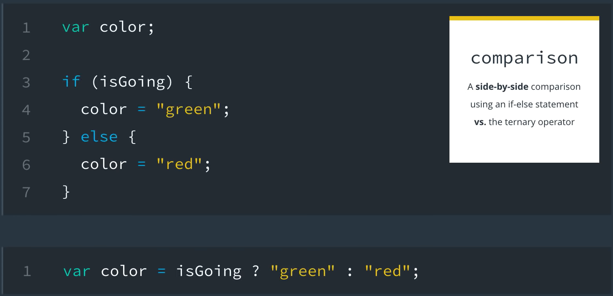
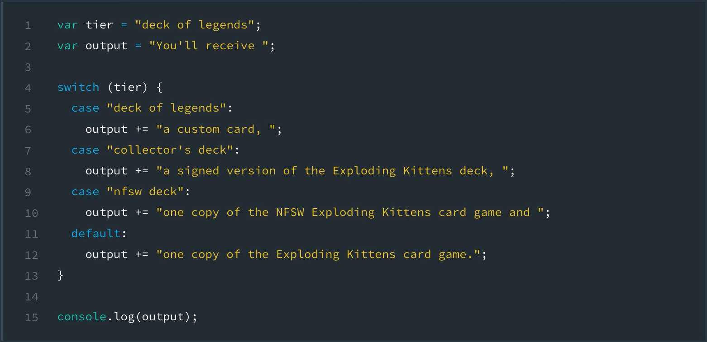

Every value in JavaScript has an inherent boolean value. When that value is evaluated in the context of a boolean expression, the value will be transformed into that inherent boolean value.
A value is falsy if it converts to false when evaluated in a boolean context.
List of all falsy values:
A value is truthy if it converts to true when eveluated in a boolean context.
Essentially, if it's not in the list of falsy values, then it's truthy.
instead of writing out if(variable === true) or if(variable === false)
We can shorten this with if(variable) (returns if variable is true) or if(!variable (returns in variable is false)
Ternary operator provides shortcut alternatives to writing lengthy if...else statements.
Ternary operator psuedo code:
conditional ? (if condition is true) : (if condition is flase)
To use the ternary operator, first provide a conditional statement on the left-side of the ?.
Then, between the ? and : write the code that would run if the condition is true and on the right-hand side of the : write the code that would run if the condition is false.
For example, you can rewrite the example code above as:
const greenLight = ture;
const color = greenLight ? "green" : "red";
console.log(color);
prints: "green"
If you breakdown the code, the condition isGoing is placed on the left side of the ?.
Then, the first expression, after the ?, is what will be run if the condition is true and the second expression after the, :, is what will be run if the condition is false.

Switch statements are typically used in place of repeating if...else statements.
Example:
let option = 4;
switch (option){
case 1:
console.log("You selected option 1");
break;
case 2:
console.log("You selected option 2");
break;
case 3:
console.log("You selected option 3");
break;
case 4:
console.log("You selected option 4");
break;
case 5:
console.log("You selected option 5");
break;
case 6:
console.log("You selected option 6");
break;
}
Although break; is not required on the last switch case, it it best to keep code consistent.
Note: If break; is not added at the end of each case, the code will run each case following the option that triggers.
If none of the cases match, nothing will run; Nothing triggers to tell the code something needs to execute. In most situations it's best practice to add a default case to catch situations where none of the case statements match.
For example, if in the above switch statement the variable was set to 10, a default case would catch this.
To create a defualt case to the switch statement, you simple add the following code:
default:
console.log("No valid option selected");
In some situations leveraging "falling-through" behavior of switch statements may be used to your advantage.
